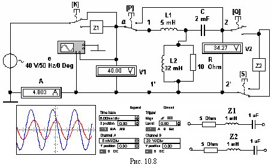
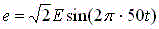

Задание 1. Определить коэффициенты А-формы несимметричного ЧП, его характеристические сопротивления и параметры Т- или П-образной схемы замещения.
С этой целью собрать схему (рис. 10.8) на рабочем поле программы EWB или программы NS8 Education (либо открыть файл Lr10.ewb при выполнении работы в среде EWB или файл Lr10.ms8 при выполнении работы в среде MS8SD) и установить следующие режимы и параметры элементов и приборов:

- ЭДС источника синусоидального напряжения
, где E = 30/N + 5, B; f = 50 Гц; Ψе = 0,
где N – номер записи фамилии студента в учебном журнале группы;
- режим АС вольтметров (RV = 1 МОм) и амперметра (RА = 1 мОм);
- масштаб во времени осциллографа 5 мс/дел; масштаб усиления каналов А и В выбрать не мене 2/3 высоты экрана;
- параметры элементов: Z1 = Z1C; L2 = 5 мГн; L3 = 32 мГн; R3 = 10 Ом; C2 = 2 мкФ; Z2 = Z2C ;
- клавиши управления ключей: К (Space для MS8SD), P, Q, S.
Провести два опыта ХХ и опыт КЗ ЧП, поочередно соединяя (посредством ключа Р) точку а с зажимом 1 ЧП (прямые опыты ХХ и КЗ) и с зажимом 2 ЧП (обратный опыт ХХ, см. рис. 10.8). Позиции ключей К (Space для MS8SD), P, Q, S указаны в табл. 10.1. Показания приборов и углы сдвига фаз (φk между напряжениями и токами, определяемые посредством осциллограмм, занести в табл. 10.1.
По найденным входным сопротивлениям ЧП (Z1Х, Z1К; Z2Х) рассчитать параметр Z, коэффициенты А, B, С, D А-формы ЧП, его характеристические сопротивления Z1C и Z2C и параметры Т-образной (для четных вариантов N) или П-образной (для нечетных вариантов N) схемы замещения ЧП. Результаты расчета параметров занести в табл. 10.2
Таблица 10.1
Питание со стороны зажимов |
Режим ЧП; положение ключей |
Измерено |
Рассчитано | ||
1 - 1′ (ключ К в верхнем положении) |
Прямой ХХ: зажимы 2 - 2′ разомкнуты; ключи P и S в нижнем положении; Q - в верхнем |
U1X, В |
I1X, А |
φ1X, град |
Z1X, Ом |
2 - 2′ (ключ К в верхнем положении) |
Обратной ХХ: зажим 1 разомкнут; ключи P и Q в верхнем положении; а S - в нижнем |
U2X, В |
I2X, А |
φ2X, град |
Z1X, Ом |
1 - 1′ (ключ К в верхнем положении) |
Прямой КЗ: зажимы 2 - 2′ закорочены; ключи P, Q и S в нижнем положении |
U1К, В |
I1К, А |
φ1К, град |
Z1K, Ом |
Таблица. 10.2
Параметр |
Коэффициенты А-формы ЧП |
Характерис- тические сопротивления |
Параметры схем замещения четырехполюсника: | |||||||||
Т-образной |
П-образной | |||||||||||
Z, Ом |
А |
В, Ом |
C, См |
D |
Z1C, Ом |
Z2C, Ом |
Z1, Ом |
Z2, Ом |
Y0, См |
Y1, См |
Y2, См |
Z0, Ом |